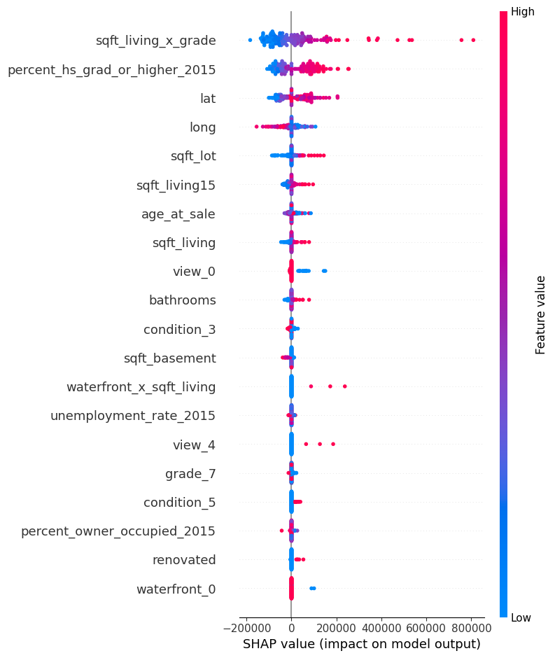
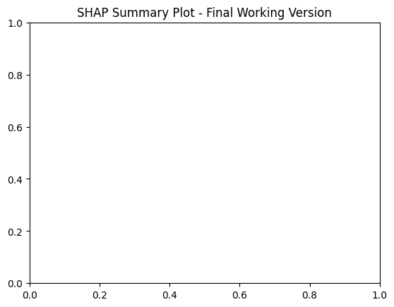

import pandas as pd
housing = pd.read_csv('https://raw.githubusercontent.com/byui-cse/cse450-course/master/data/housing.csv')
!pip install xgboost shap -q
import pandas as pd
import numpy as np
import requests
from sklearn.model_selection import train_test_split, KFold
from sklearn.preprocessing import OneHotEncoder
from sklearn.compose import ColumnTransformer
from sklearn.pipeline import Pipeline
from sklearn.metrics import mean_squared_error, r2_score
from xgboost import XGBRegressor
import shap
import matplotlib.pyplot as plturl = "https://raw.githubusercontent.com/byui-cse/cse450-course/master/data/housing.csv"
df = pd.read_csv(url)
print("Initial shape:", df.shape)
df.head()Initial shape: (20000, 21)| id | date | bedrooms | bathrooms | sqft_living | sqft_lot | floors | waterfront | view | condition | ... | sqft_above | sqft_basement | yr_built | yr_renovated | zipcode | lat | long | sqft_living15 | sqft_lot15 | price | |
|---|---|---|---|---|---|---|---|---|---|---|---|---|---|---|---|---|---|---|---|---|---|
| 0 | 1565930130 | 20141104T000000 | 4 | 3.25 | 3760 | 4675 | 2.0 | 0 | 0 | 3 | ... | 2740 | 1020 | 2007 | 0 | 98038 | 47.3862 | -122.048 | 3280 | 4033 | 429900.0 |
| 1 | 3279000420 | 20150115T000000 | 3 | 1.75 | 1460 | 7800 | 1.0 | 0 | 0 | 2 | ... | 1040 | 420 | 1979 | 0 | 98023 | 47.3035 | -122.382 | 1310 | 7865 | 233000.0 |
| 2 | 194000575 | 20141014T000000 | 4 | 1.00 | 1340 | 5800 | 1.5 | 0 | 2 | 3 | ... | 1340 | 0 | 1914 | 0 | 98116 | 47.5658 | -122.389 | 1900 | 5800 | 455000.0 |
| 3 | 2115510160 | 20141208T000000 | 3 | 1.75 | 1440 | 8050 | 1.0 | 0 | 0 | 3 | ... | 1440 | 0 | 1985 | 0 | 98023 | 47.3187 | -122.390 | 1790 | 7488 | 258950.0 |
| 4 | 7522500005 | 20140815T000000 | 2 | 1.50 | 1780 | 4750 | 1.0 | 0 | 0 | 4 | ... | 1080 | 700 | 1947 | 0 | 98117 | 47.6859 | -122.395 | 1690 | 5962 | 555000.0 |
5 rows × 21 columns
def handle_age_at_sale(df, method='adjust'):
"""Compute 'age_at_sale' and fix invalid 'yr_built' vs 'sale_year' issues."""
if method == 'nan':
df['age_at_sale'] = df['sale_year'] - df['yr_built']
df.loc[df['age_at_sale'] < 0, 'age_at_sale'] = np.nan
elif method == 'zero':
df['age_at_sale'] = df['sale_year'] - df['yr_built']
df.loc[df['age_at_sale'] < 0, 'age_at_sale'] = 0
elif method == 'adjust':
df.loc[df['yr_built'] > df['sale_year'], 'yr_built'] = df['sale_year']
df['age_at_sale'] = df['sale_year'] - df['yr_built']
else:
raise ValueError("method must be 'nan', 'zero', or 'adjust'")
return df
# --- Parse date fields and create temporal features
df['date'] = pd.to_datetime(df['date'].str.replace('T000000', ''), errors='coerce')
df['sale_year'] = df['date'].dt.year
df['sale_month'] = df['date'].dt.month
df['sale_dayofweek'] = df['date'].dt.dayofweek
# --- Binary engineered columns
df['renovated'] = df['yr_renovated'].apply(lambda x: 1 if x > 0 else 0)
df['high_grade'] = (df['grade'] > 10).astype(int)
df['low_grade'] = (df['grade'] < 7).astype(int)
df['sqft_living_x_grade'] = df['sqft_living'] * df['grade']
df['waterfront_x_sqft_living'] = df['sqft_living'] * df['waterfront']
df['has_basement'] = np.where(df['sqft_basement'] > 0, 1, 0)
df = handle_age_at_sale(df, method='adjust')
print("✅ Engineered features added.")✅ Engineered features added.# Example Census API pull (2015 ACS)
url = (
"https://api.census.gov/data/2015/acs/acs5?"
"get=NAME,B25001_001E,B25003_002E,B25003_003E,B11016_001E,"
"B12001_001E,B12001_002E,B15003_001E,B15003_022E,B15003_023E,"
"B15003_024E,B15003_025E,B23025_003E,B23025_005E"
"&for=zip%20code%20tabulation%20area:*"
)
response = requests.get(url)
if response.status_code == 200:
data = response.json()
df_census = pd.DataFrame(data[1:], columns=data[0])
df_census.rename(columns={'zip code tabulation area': 'zipcode'}, inplace=True)
df_census['zipcode'] = df_census['zipcode'].astype(str).str.zfill(5)
for col in df_census.columns:
if col != 'zipcode' and col != 'NAME':
df_census[col] = pd.to_numeric(df_census[col], errors='coerce')
# Calculate key percentages
df_census['percent_owner_occupied_2015'] = df_census['B25003_002E'] / df_census['B25001_001E'] * 100
df_census['percent_renter_occupied_2015'] = df_census['B25003_003E'] / df_census['B25001_001E'] * 100
df_census['unemployment_rate_2015'] = df_census['B23025_005E'] / (df_census['B23025_003E'] + df_census['B23025_005E']) * 100
df_census['percent_hs_grad_or_higher_2015'] = (
(df_census['B15003_022E'] + df_census['B15003_023E'] + df_census['B15003_024E'] + df_census['B15003_025E'])
/ df_census['B15003_001E'] * 100
)
df_census = df_census[['zipcode', 'percent_owner_occupied_2015', 'percent_renter_occupied_2015',
'unemployment_rate_2015', 'percent_hs_grad_or_higher_2015']]
# Merge into housing
df['zipcode'] = df['zipcode'].astype(str).str.zfill(5)
df = df.merge(df_census, on='zipcode', how='left')
print("✅ Census data merged successfully.")
else:
print("❌ Error fetching Census data:", response.status_code)✅ Census data merged successfully.cols_drop = ['id', 'price', 'date', 'yr_built', 'yr_renovated', 'sqft_above']
X = df.drop(columns=cols_drop)
y = df['price']
cat_features = ['zipcode', 'view', 'condition', 'grade', 'waterfront']
num_features = [col for col in X.select_dtypes(include=['int64','float64']).columns if col not in cat_features]
print("Numerical Features:", num_features)
print("Categorical Features:", cat_features)
X_train, X_test, y_train, y_test = train_test_split(X, y, test_size=0.2, random_state=42)
print(f"Train shape: {X_train.shape}, Test shape: {X_test.shape}")Numerical Features: ['bedrooms', 'bathrooms', 'sqft_living', 'sqft_lot', 'floors', 'sqft_basement', 'lat', 'long', 'sqft_living15', 'sqft_lot15', 'renovated', 'high_grade', 'low_grade', 'sqft_living_x_grade', 'waterfront_x_sqft_living', 'has_basement', 'age_at_sale', 'percent_owner_occupied_2015', 'percent_renter_occupied_2015', 'unemployment_rate_2015', 'percent_hs_grad_or_higher_2015']
Categorical Features: ['zipcode', 'view', 'condition', 'grade', 'waterfront']
Train shape: (16000, 29), Test shape: (4000, 29)from sklearn.preprocessing import OneHotEncoder
from sklearn.compose import ColumnTransformer
from sklearn.pipeline import Pipeline
preprocessor = ColumnTransformer([
('num', 'passthrough', num_features),
('cat', OneHotEncoder(handle_unknown='ignore', sparse_output=False), cat_features)
])
xgb = XGBRegressor(
n_estimators=800,
max_depth=8,
learning_rate=0.05,
subsample=0.8,
colsample_bytree=0.8,
reg_lambda=1.0,
random_state=42,
tree_method="hist"
)
pipeline = Pipeline([
('preprocessor', preprocessor),
('regressor', xgb)
])pipeline.fit(X_train, np.log1p(y_train))
y_pred = np.expm1(pipeline.predict(X_test))
rmse = np.sqrt(mean_squared_error(y_test, y_pred))
r2 = r2_score(y_test, y_pred)
print(f"Test RMSE: ${rmse:,.2f}")
print(f"Test R²: {r2:.4f}")Test RMSE: $131,778.10
Test R²: 0.8849# === STEP 8 FINAL — Feature Importance + SHAP (working version) ===
xgb_raw = pipeline.named_steps['regressor']
preproc = pipeline.named_steps['preprocessor']
cat_out = preproc.named_transformers_['cat'].get_feature_names_out(cat_features)
all_feature_names = list(num_features) + list(cat_out)
# Feature Importance table
importance_df = pd.DataFrame({
'Feature': all_feature_names,
'Importance': xgb_raw.feature_importances_
}).sort_values(by='Importance', ascending=False)
print(importance_df.head(15))
# SHAP KERNEL EXPLAINER ON PREPROCESSED SPACE
import shap
# background sample
X_background = preproc.transform(X_train.sample(60, random_state=42))
X_background = np.array(X_background, dtype=float)
# transformed test
X_trans_test = preproc.transform(X_test)
X_trans_test = np.array(X_trans_test, dtype=float)
# prediction function DIRECTLY on processed numeric matrix:
def predict_fn(data):
# data is numeric transformed data
preds_log = xgb_raw.predict(data) # model outputs LOG price
return np.expm1(preds_log) # convert back to price dollars
explainer = shap.KernelExplainer(predict_fn, X_background)
shap_values = explainer.shap_values(X_trans_test[:150])
shap.summary_plot(shap_values, X_trans_test[:150], feature_names=all_feature_names)
plt.title("SHAP Summary Plot - Final Working Version")
plt.show() Feature Importance
20 percent_hs_grad_or_higher_2015 0.255071
13 sqft_living_x_grade 0.096238
114 waterfront_1 0.043181
95 view_4 0.043007
14 waterfront_x_sqft_living 0.032571
113 waterfront_0 0.032568
11 high_grade 0.032090
91 view_0 0.031518
33 zipcode_98022 0.024107
6 lat 0.019275
24 zipcode_98004 0.018916
19 unemployment_rate_2015 0.014222
58 zipcode_98074 0.013117
104 grade_5 0.010161
2 sqft_living 0.009354
